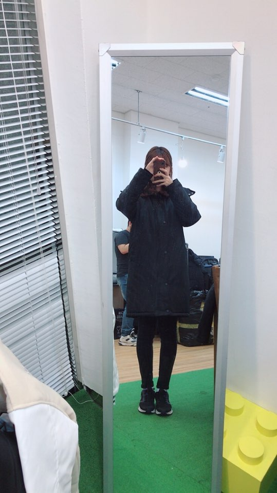
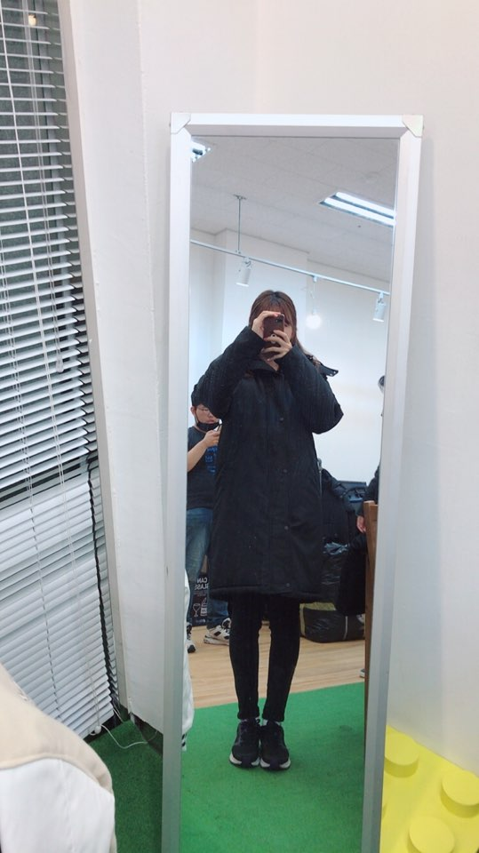
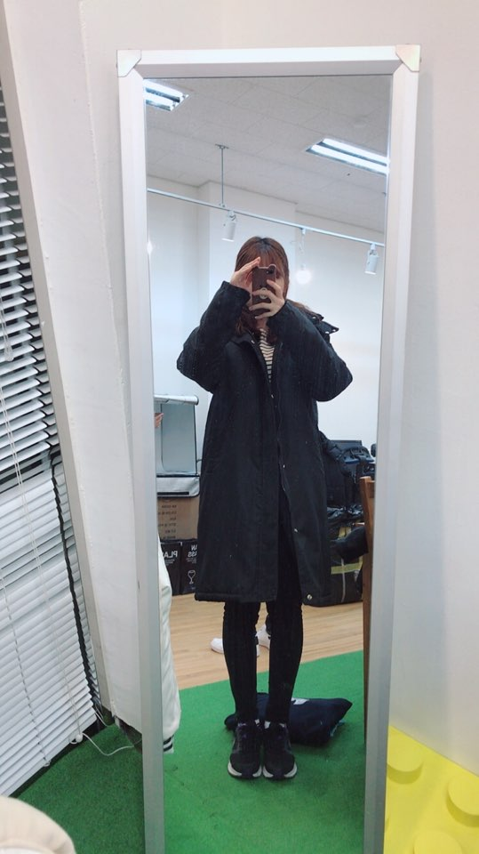
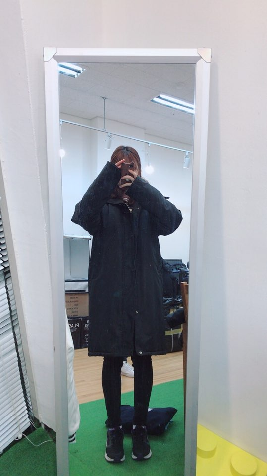
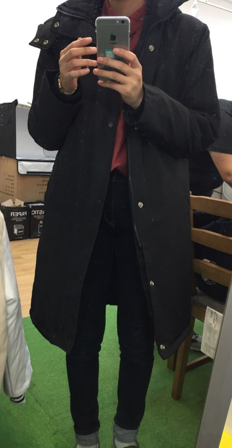
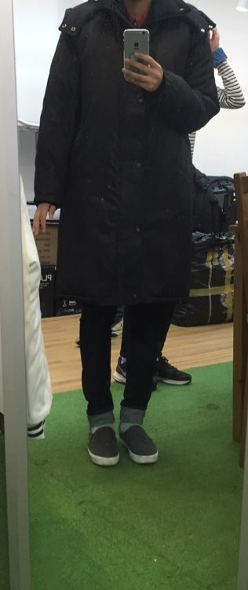
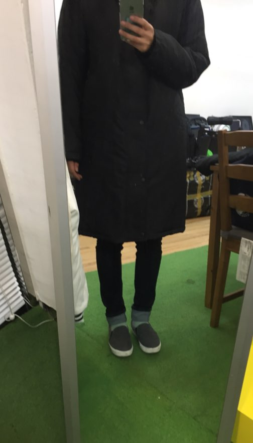
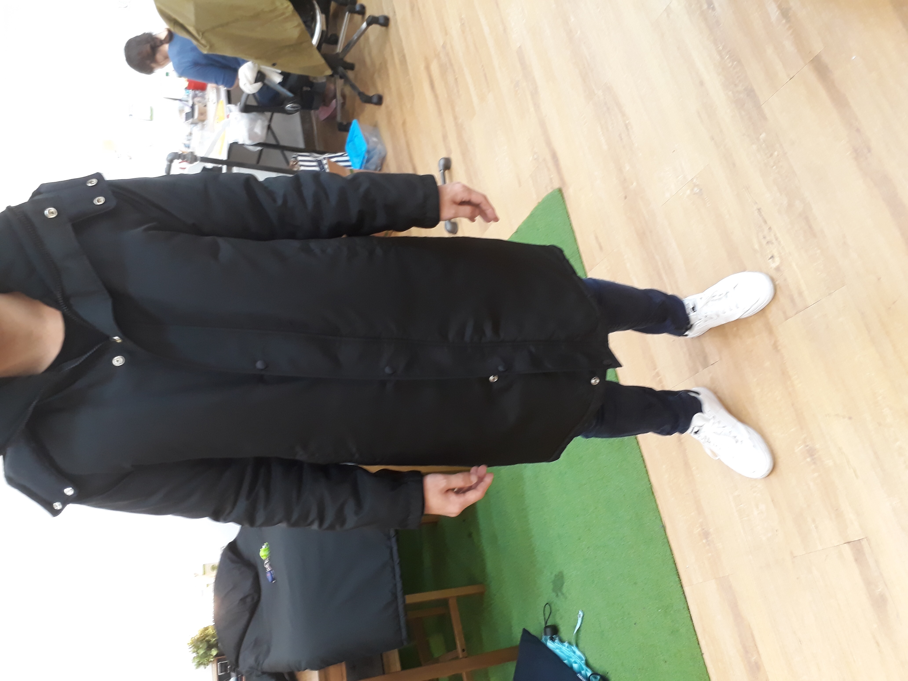
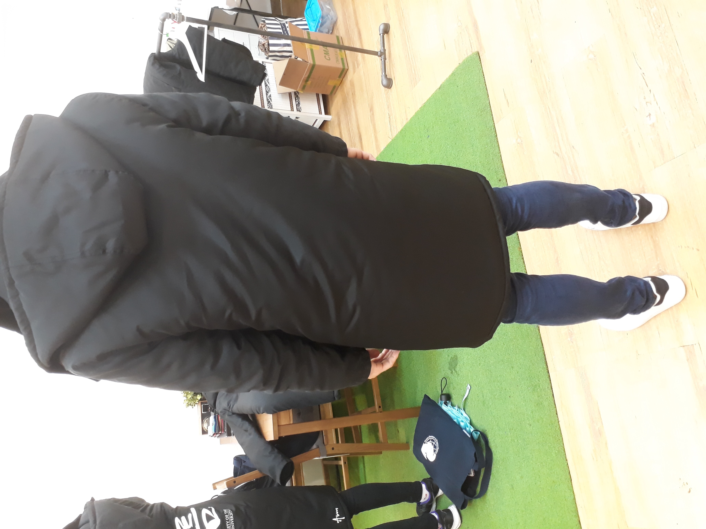

팀 팩토리
라이덱스-타슬란(일반), 옥스포드(고급)
때가 덜 타는건 고급형
2XS~4XL(추가금 X)
오리털은 일체형 불가능
일반 7oz 고급8oz
고급형 벌당 60000
순서대로 XS S M L 입니다.
   
저도 정리해보자면, 키 170이고 평소 상의 m 입습니다.
xs - 전체적인 길이가 무릎 5센치 위정도 오고 제가 팔이 긴 탓에 소매는 살짝 뎅강합니다. 몸통 사이즈가 제 몸에 딱맞지만 그 탓에 살짝 움직임이 불편해요.
s - 저한테 가장 적절한 사이즈입니다. 전체적인 길이는 무릎 위 3센치 정도로 길이 자체는 xs과 큰 차이가 없지만 팔 길이가 길어서 팔 짧으신 분들이 입으시면 손가락만 보일 것 같아요. 니트입고 입어도 몸통은 남을 정도로 여유있습니다. 회사 측에서는 s가 여자분들이 가장 많이 주문하는 사이즈라고 하셨습니다!
m - 전체적인 길이는 제 무릎까지 올 정도고 팔 길이도 길어서 저한테도 엄지손가락 갈라지는 그 부분까지 옵니다. 몸통이 커서 등이 뜹니다. 침낭까지는 아니지만 박시하기 때문에 평소 옷 크게 입으시는거 좋아하시는 분들은 정사이즈 하셔도 괜찮을 것 같아요.
l - 이건 침낭 그 자체입니다..ㅎㅎㅎ 소매가 길어서 제가 입었을 때 손가락밖에 보이지 않을 정도이구요, 걍 큽니다. 여자분들에게는 웬만해서는 추천하지 않는 사이즈에요.
순서대로 XS S M 입니다.
사진 원본이 크기가 다 달라서 비율 맞추려고 크기조정 안했어요
  남자 M 입니다. 급하게 한다고 사진 못돌렸네요 핸드폰 눕혀서 봐주세요 ㅎㅎ

size info